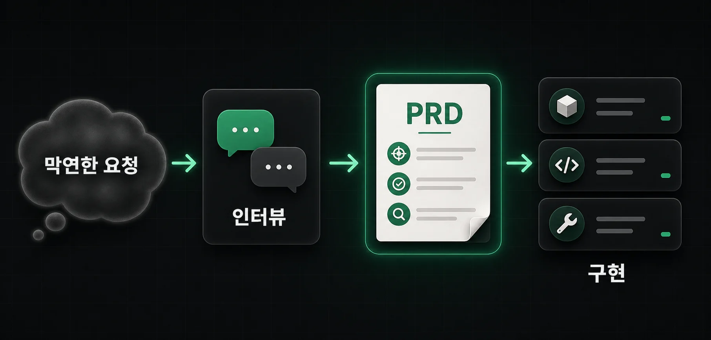
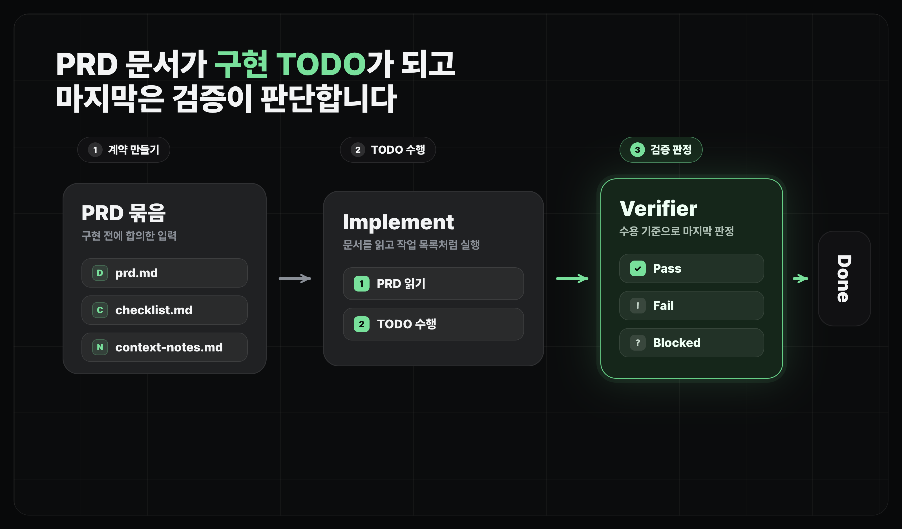

에이전틱 워크플로우
계획하고 구현하기
clarify, prd, implement Skill로 요청을 구현 가능한 작업으로 바꾸는 방법
얻어갈 것
clarify,prd,implementSkill이 각각 어디까지 책임지는지 구분합니다.- 모호한 요청을 구현 가능한 PRD와 실행 체크리스트로 바꿉니다.
| Skill | 하는 일 | 끝났다고 보는 상태 |
|---|---|---|
clarify | 질문으로 모호함을 줄입니다. | PRD로 넘길 요약이 생깁니다. |
prd | 요구사항, 범위, 기술 변경, 검증 방식을 문서로 만듭니다. | 사람이 검토할 수 있는 PRD가 생깁니다. |
implement | 승인된 PRD를 체크리스트로 바꾸고 구현합니다. | 완료 조건과 검증 결과가 추적됩니다. |

clarify: 질문으로 좁히기
- "무엇을 만들고 싶은지"는 있는데 명확하지 않을 때 사용합니다.
- 바로 PRD를 쓰거나 구현하지 않고, 구현 방향을 바꿀 수 있는 질문부터 채우는 게 좋습니다.
- 결과물은 최종 문서가 아니라 다음
prd단계로 넘길 핸드오프 요약입니다.
실제로는 /clarify [요구사항]처럼 시작합니다. 좋은 clarify는 바로 답을 쓰지 않고, 먼저 무엇을 물어봐야 하는지부터 정리합니다.
prd: 구현 기준 만들기
제품 요구사항 문서(PRD)는 AI가 구현 중에 계속 확인할 작업 주문서입니다.
- 원래 PRD(Product Requirements Document)는 "무엇을 왜 만들지"를 정리하는 문서입니다.
- 에이전트에게 구현을 맡길 때는 구현 방향과 검증 방식까지 PRD 안에 같이 넣는 편이 좋습니다.
좋은 PRD는 길이보다 기준이 중요합니다.
| 항목 | 의미 |
|---|---|
| 문제와 목표 | 왜 이 기능이 필요한지, 어떤 불편을 줄이는지 |
| 범위와 제외할 것 | 이번 PRD에서 만들 것과 미룰 것 |
| 사용자 흐름 | 어떤 화면에서 무엇을 하고 어떤 결과를 보는지 |
| 요구사항 | 로그인, 데이터 저장, 권한처럼 구현을 바꾸는 조건 |
| 기술 변경 | 바뀔 화면, 파일, API, DB, 권한 구조 |
| 완료 조건 | 어떤 동작과 데이터가 확인되면 끝이라고 볼지 |
| 검증 | 작업을 제대로 수행했는지 어떻게 확인할지 |
실제로는 /prd 방금 clarify에서 정리한 내용을 바탕으로 구현 가능한 PRD를 만들어줘처럼 넘깁니다.
PRD 크기 조절하기
한 PRD에 로그인, 저장, 목록, 공유, 알림, 배포까지 모두 넣으면 AI도 어디서부터 끝내야 할지 흐려집니다. PRD가 커지면 하나의 성공을 확인할 수 있는 단위로 쪼개고, 다음 기능은 다음 PRD로 미룹니다.
- 한 사용자가 한 번에 끝낼 수 있는 흐름인지 봅니다.
- 화면, DB, 권한이 여러 방향으로 갈라지면 나눕니다.
- 검증 시나리오가 너무 많아지면 핵심 흐름과 후속 작업으로 나눕니다.
- 운영자 화면, 알림, 통계처럼 없어도 MVP가 도는 기능은 뒤로 뺍니다.
implement: PRD 바탕으로 구현하기
PRD가 "무엇을 만들지"였다면, implement는 그걸 실제 코드로 옮기는 단계입니다. PRD와 체크리스트를 읽고, 완료 조건을 하나씩 지워가며 구현합니다.

- 사전에 되돌리기 어려운 데이터 변경이나 구조를 크게 바꾸는 결정 등은 사람에게 물어보고 시작합니다.
- 한 번에 다 짜게 두기보단 단계별로 구현하도록 합니다.
- 구현을 마쳤다고 바로 "끝"이 아닙니다. 스스로 "다 된 것 같다"는 판단은 자주 틀립니다 - 짠 사람이 자기 결과를 보면 놓친 걸 또 놓치거든요. 그래서 마지막엔 완료 조건을 기준으로 따로 한 번 검증을 돌립니다.
실제로는 /implement 이 PRD를 기준으로 구현해줘처럼 넘깁니다. 구현 단계의 기준은 "코드를 많이 썼는가"가 아니라, PRD의 완료 조건을 하나씩 만족했는가입니다.
마무리
- Skill을 쓰면 긴 프롬프트를 외우지 않아도, 단계별 책임을 분리해서 AI에게 일을 맡길 수 있습니다.
- 이 레슨에서는
clarify -> prd -> implement로 모호한 요청을 구현 가능한 작업으로 바꿨습니다. - 다음 레슨에서는
verify로 실제 화면, 데이터, 테스트, diff를 독립적으로 한 번 더 확인합니다.